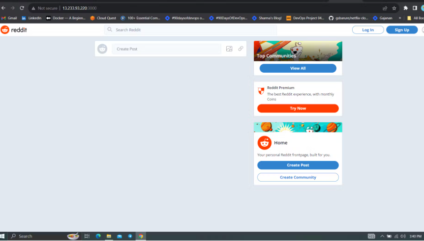
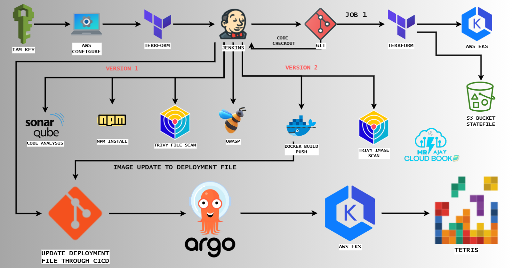
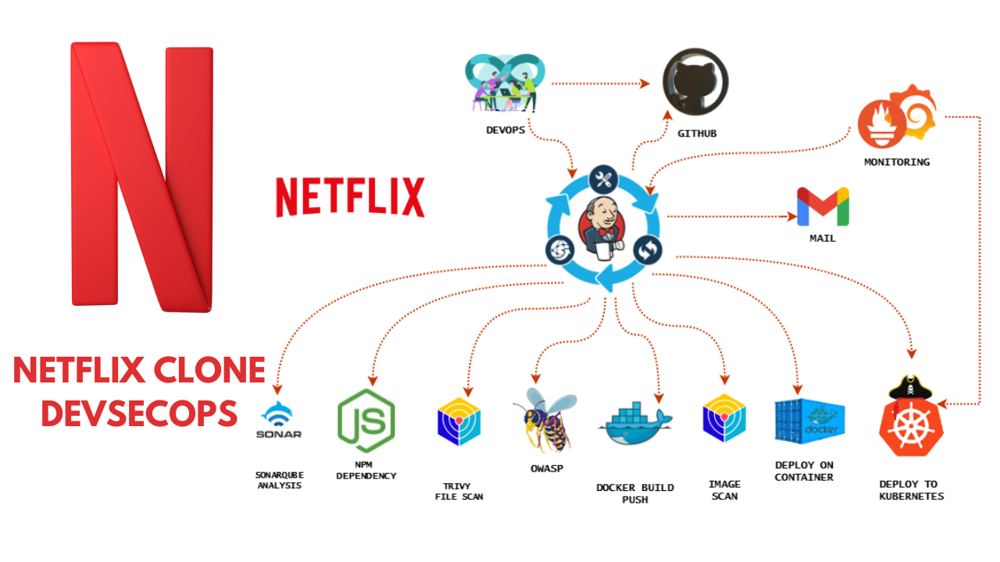
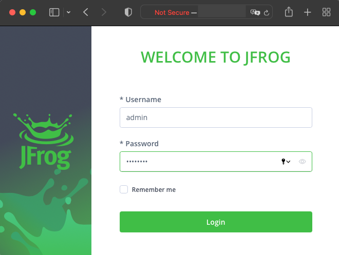

This project involves the deployment of a Java application onto AWS, utilizing a 3-tier architecture approach. The Java application serves as the core component, containing business logic and functionality. AWS is chosen as the cloud platform for its scalability, reliability, and wide array of services. The 3-tier architecture divides the application into three layers: presentation, application, and data tiers. The presentation tier interacts with users, the application tier handles business logic, and the data tier manages data storage and retrieval.

This entails setting up Reddit's services, including its web application, backend services, and databases, within a Kubernetes cluster running on AWS EKS. Kubernetes provides features like automatic scaling, load balancing, and self-healing, making it suitable for hosting complex applications like Reddit.

Super Mario is a classic game loved by many. In this guide, we’ll explore how to deploy a Super Mario game on Amazon’s Elastic Kubernetes Service (EKS). Utilizing Kubernetes, we can orchestrate the game’s deployment on AWS EKS, allowing for scalability, reliability, and easy management.



Automating Tetris deployments using DevSecOps principles with ArgoCD, Terraform, and Jenkins for two game versions involves integrating these tools into a streamlined pipeline for efficient, secure, and consistent deployment processes.

Creating a Netflix clone with continuous integration and continuous delivery (CI/CD) along with monitoring using Jenkins, Docker, Kubernetes, and DevSecOps principles involves setting up an automated pipeline for building, testing, deploying, and monitoring the application.

AWS resources with Terraform, Jenkins CI/CD, and hosting a static website in Amazon S3 (Simple Storage Service) can create a robust infrastructure-as-code (IaC) pipeline for automating the deployment of static websites.

Deploying a cloud-native voting application on Amazon Elastic Kubernetes Service (EKS) involves leveraging Kubernetes to manage containerized components of the application efficiently.

we will be deploying a Petshop Java Based Application. This is an everyday use case scenario used by several organizations. We will be using Jenkins as a CICD tool and deploying our application on a Docker container and Kubernetes cluster. Hope this detailed blog is useful.

Artifactory is a universal DevOps solution for hosting, managing, and distributing binaries and artifacts. Any type of software in binary form – such as application installers, container images, libraries, configuration files, etc. – can be curated, secured, stored, and delivered using Artifactory.